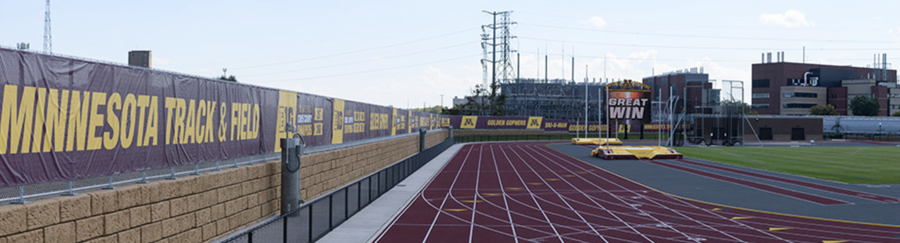

Heading to Eguene, Oregon

This week I will be heading to Eugene, Oregon where I will be competing in the NCAA outdoor track and field national
championship. I qualified for this meet by have one of the top 24 scores in the entire NCAA in the decathlon.
We are going to be flying out of the Detroit airport to Portland. From Portland we will drive to Eugene, Oregon where the
University of Oregon will host the track meet on their world-class track facility as seen in the picture above. This
will be my second time going to this meet and first time for Michigan State. Last year I qualified for the meet in my first
outdoor track season at the University of Michigan, where I spent my first two years. I feel a lot more comfortable going
into this meet compared to last year. I feel that I have not put together a good decathlon yet this year, but my body has
been feeling excellent lately at practice and I am excited to give it another go. My goal is to be a first team All
American. To do this I have to place in the top 8 people at the meet. I am ready to go for Eugene!
Recap of the Big Ten Championship Meet

This year the Big Ten outdoor track championship meet was held at the University of Minnesota. I went in to this
meet looking to crown myself a Big Ten champion and win the decathlon, but it seems the higher ups have bigger
plans for me. I ended up taking third place in the decathlon after a long two days. During this decathlon I had
a great start by hitting a PR in the 100-meter dash. The momentum shifted quickly as I jumped once of my worst
jumps in the long jump, high jump and did not throw very well in the shot put. The finish a dreadful day 1 I
also ran a bad time in the 400-meter dash. Despite a terrible day one I came back and put together one of my
best day twos I have ever had. I ended up hitting a massive PR in the discus along with good showings in the
javelin and the 1500-meter run. I was very proud of myself for coming back on day two and putting a good day
together despite my terrible day one. I think this meet was a positive learning experience and will make me
stronger going into the national championship meet.